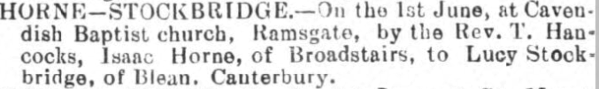

Lucy Horne (née Stockbridge) 1875 - 1953
[ Home ] | [ Calendar ] | [ Surnames Index ] | [ Family History ], Lucy Stockbridge, the wife of Isaac Horne (the great-great-uncle of Nigel Horne), was born in Chartham, Kent, England on Apr 11, 18751,2,3,4,5,6,7,8, was baptized there at St Mary on Jun 13, 1875 and married Isaac (a gardener domestic servant with whom she had 2 children: Edward John and Norman George) at Cavendish Baptist Church, Cavendish Street, Ramsgate, Kent, England on Jun 1, 190710.
Throughout her life, Lucy lived in several places: at Vale Cottage, Sturry, Kent on Apr 3, 18811; at Sunny Side, Herne Bay, Kent in 18912 and on Apr 5, 189112; in Hensingham, Cumbria, England in 19013; at The Hollins in Hensingham on Mar 31, 190113; at 23 Victoria Avenue, Northdown, Margate, Kent on Apr 2, 191114; and on The Cottage, Fairfield Road, St Peters, Thanet, Kent on Jun 19, 19215 and on Sep 29, 19396.
She died on Apr 27, 1953 in Thanet, Kent7,9.
Children
- Edward John was born on Jun 12, 1909
- Norman George was born on Jul 2, 1916
Citations
- 1881 England Census Online publication - Provo, UT, USA: The Generations Network, Inc., 2004. 1881 British Isles Census Index provided by The Church of Jesus Christ of Latter-day Saints © Copyright 1999 Intellectual Reserve, Inc. All rights reserved. All use is subject to the
- 1891 England Census Online publication - Provo, UT, USA: The Generations Network, Inc., 2005.Original data - Census Returns of England and Wales, 1891. Kew, Surrey, England: The National Archives of the UK (TNA): Public Record Office (PRO), 1891. Data imaged from The National
- 1901 England Census Online publication - Provo, UT, USA: The Generations Network, Inc., 2005.Original data - Census Returns of England and Wales, 1901. Kew, Surrey, England: The National Archives of the UK (TNA): Public Record Office (PRO), 1901. Data imaged from the National
- 1911 England Census Online publication - Provo, UT, USA: Ancestry.com Operations, Inc., 2011.Original data - Census Returns of England and Wales, 1911. Kew, Surrey, England: The National Archives of the UK (TNA), 1911. Data imaged from the National Archives, London, England.
- 1921 Census Of England & Wales - Findmypast (was age 46 and the wife of the head of the household)
- 1939 Register - Findmypast (was the wife of the head of the household)
- England & Wales, Death Index: 1984-2005 Online publication - Provo, UT, USA: The Generations Network, Inc., 2007.Original data - General Register Office. England and Wales Civil Registration Indexes. London, England: General Register Office. © Crown copyright. Published by permission of the Cont
- England & Wales, FreeBMD Birth Index, 1837-1915 Online publication - Provo, UT, USA: The Generations Network, Inc., 2006.Original data - General Register Office. England and Wales Civil Registration Indexes. London, England: General Register Office. © Crown copyright. Published by permission of the Cont
- England & Wales, National Probate Calendar (Index of Wills and Administrations),1861-1941 Online publication - Provo, UT, USA: Ancestry.com Operations Inc, 2010.Original data - Principal Probate Registry. Calendar of the Grants of Probate and Letters of Administration made in the Probate Registries of the High Court of Justice in England. Londo
- 1911 England Census Online publication - Provo, UT, USA: Ancestry.com Operations, Inc., 2011.Original data - Census Returns of England and Wales, 1911. Kew, Surrey, England: The National Archives of the UK (TNA), 1911. Data imaged from the National Archives, London, England.
- 1881 England, Wales & Scotland Census - Findmypast (was age 5 and the daughter of the head of the household)
- 1891 England, Wales & Scotland Census - Findmypast (was age 15 and a servant in the household)
- 1901 England, Wales & Scotland Census - Findmypast (was age 25 and a servant in the household)
- 1911 Census for England & Wales - Findmypast (was age 35 and the wife of the head of the household)
Media
Isaac Horne - Lucy Stockbridge - marriage

1939 Register Transcription - TNA-R39-1685-1685I-018-13
England & Wales births 1837-2006 - BMD/B/1875/2/AZ/000527/266
England & Wales marriages 1837-2008 - BMD/M/1907/2/AZ/000357/303
England & Wales deaths 1837-2007 - BMD/D/1953/2/AZ/000451/017
1881 England, Wales & Scotland Census - GBC/1881/0004737246
1891 England, Wales & Scotland Census - GBC/1891/0005764241
Kent Baptisms - GBPRS/CANT/B/96193955
England Births & Baptisms 1538-1975 - R_885422393
1901 England, Wales & Scotland Census - GBC/1901/0029356048
1939 Register - TNA/R39/1685/1685I/018/14
Family Tree

Generated by Ged2Site. Last updated on Jul 20, 2025